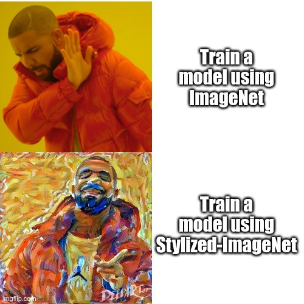

Alban Marie
mar. 04, 2021
Zoom
Nowadays, it is well established that ConvNets are able to achieve incredible performance on complex vision task such as classification, object recognition or semantic segmentation. A common thought is that humans and ConvNets are able to solve these tasks by learning increasingly complex representations of object shapes. However, recent studies show that humans and ConvNets have indeed very different strategies by not being biased towards the same information in images. To this end, authors propose a stylized version of ImageNet , allowing ConvNets to learn images representation used by humans easier.
